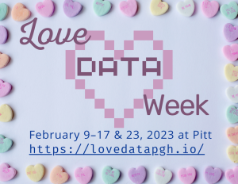

Love Data Week is an annual time for libraries to showcase, discuss, and celebrate working with data.
2023 is the Year of Emotional Well-Being at Pitt, and this year we want to emphasize healthy learning and professional development: it’s not about being the perfect coder or making the perfect plot, but about starting where you are, and doing what you can with what you have.
In that spirit, we’re offering accessible workshops, artistic expressions with data, informative talks, and social mixers about data work.
When is Love Data Week at Pitt? Well, International Love Data Week is always the week of Valentine’s Day, but our events at Pitt can’t all fit into one week! Our dates locally are February 9–17 & 23, 2023.
How to register? There is no registration for the entire series; each event has its own registration link, so pick and choose as you like! All events are free and open to the Pitt and UPMC communities.
Week at a glance
Featured Events
Listed alphabetically by presenter
Introduction to All Of Us Researcher Workbench
Dr. Ansuman Chattopadhyay, Health Sciences Library System (HSLS)
& Sri Chaparala, HSLS
The All of Us Research Program (AoURP), led by the National Institutes of Health, is a longitudinal cohort study aimed at advancing precision medicine and improving human health through partnering with one million or more diverse participants across the United States. The All of Us Researchers Workbench is a cloud-based platform where researchers can access AoURP-generated data. This short one-hour workshop will focus on AoU data structure, onboarding, cloud computing, example applications, and the scope of research questions.
Online
📅 Tuesday, Feb. 14 🕐 1–2pm
✏️ Register here
Art + Data
Dr. Chelsea Gunn, Department of Information Culture and Data Stewardship,
& Liz Monk, Center for Social and Urban Research
Data is collected and shared in a myriad of ways and sometimes can be complicated or difficult to understand (especially in a presentation where the slide goes too quickly and the numbers are small and you are in the back of the room). But there are many ways to use and share data!
Please join us as we explore the connection between art and the creative side of visualizing data. In this workshop we will share data art inspiration, explore resources for personal and civic data, and spend time getting creative making our own art using data.
No computers will be used in this event, and there are no prerequisite skills or experiences. You are encouraged to join even (or especially!) if you feel like you shouldn’t because you aren’t a “data” person. You should!
Through this workshop, we hope you will build connections, discover new ways of displaying data, and feel more confident exploring datasets on your own.
Audience: General Pitt community
At Hillman Library
📅 Wednesday, Feb. 15 🕑 2–3:30pm
✏️ Register here
Starting Where You Are – Tips for Your First Data Science Project
Jamaica Jones, PhD Candidate, University of Pittsburgh, School of Computing and Information,
& Ali Krzton, Research Data Management Librarian, Auburn University
For those of us who aren’t data scientists, “data science” can feel mysterious and out of reach. In reality, data science is like everything else – completed in a series of steps, inevitably beginning with the first. Nobody begins anything as an expert – this talk will provide some tools for starting where you are.
Led by two recent data science beginners, this talk will open with an introduction to getting to know your data. Understanding the structure and scope of your data is an essential first step in working with it successfully. We will use an open-source tool called Open Refine to review a data set and understand the many ways in which data can be messy.
Another important step in building data science skills is working from existing code. Far from being a lazy shortcut, code reuse is standard practice in data science. We will share some tips for getting the most out of code samples, including finding reusable code, interpreting functions and adapting existing code to the needs of your project.
Having recently completed data science fellowships, the two presenters each began their fellowship work as newcomers to data science. By the end, each had completed projects that advanced analysis across federal funding and research data management agencies. They did so by starting where they were, taking one step at a time and learning to ask for help when needed. Their talk will conclude with a review of easy-to-access resources available to data workers of all levels of ability.
Audience: General Pitt community
Online
📅 Tuesday, Feb. 14 🕚 11–11:45am
✏️ Register here
Producing Maps using ArcGIS Online and ESRI’s Living Atlas
Dr. Susan Lucas, Urban Studies
In this workshop participants will learn about spatial data and nonspatial attribute data, types of spatial data files and thematic maps. Using software developed by Esri (Environmental Systems Research Institute), the world leader in Geographic Information Systems (GIS), participants will learn how to produce several types of thematic maps using ArcGIS Online (AGOL) and ArcGIS Living Atlas of the World (Living Atlas). AGOL is a piece of web-based mapping software that allows users to produce a variety interactive web-based thematic maps, perform spatial analyses and visualize data. The Living Atlas of the World is a curated collection of geospatial data from around the world. Easily accessible, the Living Atlas allows individuals to find and manipulate geospatial data using Esri software. Participants will then learn how to open their maps in ArcGIS Pro, a desktop GIS and export maps as a pdf.
Audience: General Pitt community
Online
📅 Thursday, Feb. 16 🕙 10am–12pm
✏️ Register here
Open Educational Resources - Iteration in data science for health sciences
Dr. Ravi Patel, School of Pharmacy
Open Educational Resources (OER) are any type of educational material freely available for teachers and students to use, adapt, share, and reuse. These resources can be overwhelming to locate and/or create. This discussion will review a project to compile and share a repository of information for clinician students learning about data. The project began with an OER grant, found an iteration on Google Docs, GitHub Pages, and a Notion repository. This presentation will discuss challenges, learnings, and options to learn along the presenter’s journey and share resources for both health sciences and data science perspectives.
Audiences: Graduate students; postdoctoral fellows; faculty and instructors
Online
📅 Friday, Feb. 17 🕚 11am–12pm
✏️ Register here
Gestural Music-Making and Wireless Data Manipulation in Electronic Music
Brian Riordan, School of Music
Real-time electronic music presents a fascinating opportunity for manipulating data to produce different sonic results. In the past, this genre was created exclusively in the studio. Recently, a floodgate of new hardware interfaces for musical expression gave laptop performers newer and better ways to control software with hardware on stage in front of an audience. Music, at its core, is a means of communication, and computers offer ways of enhancing interconnection. My presentation will demonstrate three real-time approaches to manipulating computer data to produce electronic sounds. I will begin with a demonstration using the laptop as an instrument using the programming environment Max/MSP. Next, I will perform a short improvisation using an iPad as a controller, which uses a custom-built interface. Finally, I will expand the presentation into a group workshop by inviting several audience members to participate with their laptops. By connecting to the wi-fi, the participants can perform electronic music as a group using a URL that I will generate for the workshop.
Audience: General Pitt community
At Hillman Library
📅 Friday, Feb. 17 🕒 3–4pm
✏️ Register here
Workshops and Presentations
Clinical Data for Research: Health Record Research Request (R3) (online)
📅 Thursday, Feb. 9 🕑 2–2:30pm
✏️ More info & register
The NIH Policy for Data Management & Sharing: Catalog vs. Repository for Restricted Datasets (online)
📅 Monday, Feb. 13 🕚 11am–12pm
✏️ More info & register
Data Visualization in R and ggplot2 (online)
📅 Monday, Feb. 13 🕑 2–4pm
✏️ More info & register
R and RStudio Drop-In Hour (Hillman Library Rm 255)
📅 Tuesday, Feb. 14 🕔 5–6pm
✏️ More info
Zotero Spring Cleaning: Tips for managing your Zotero library (online)
📅 Wednesday, Feb. 15 🕑 11am–12pm
✏️ More info & register
Introduction to R (online)
📅 Thursday, Feb. 16 🕛 12–1pm
✏️ More info & register
Data TLC: Organizing Data with Spreadsheets (online)
📅 Thursday, Feb. 16 🕐 1–3pm
✏️ More info & register
How to Name and Organize Your Project Files (online)
📅 Friday, Feb. 17 🕧 12:30–1pm
✏️ More info & register
Introduction to 3D Scanning
About Love Data Week at Pitt
Love Data Week at Pitt 2023 is a joint project by the University Library System (ULS) and Health Sciences Library System (HSLS) with support from the Year of Emotional Well-Being Funding Opportunity.
Questions about Love Data Week at Pitt? Contact dbordelon@pitt.edu (Dominic Bordelon, ULS) and mar@pitt.edu (Melissa Ratajeski, HSLS).
Last year’s lineup: Love Data Week 2022 at Pitt
Social Mixers
Working with data can be a love-hate relationship, full of ups and downs, excitement and frustration. Our social mixer will offer an inclusive space to commiserate with other data collectors, analysts, and wranglers, grow your professional network, and swap practical ideas and tips. We welcome those from all stages of learning, from beginners to experts. Unlike many academic mixers, this event will not focus on a department or discipline—rather, a broad set of activities—so this is a great opportunity to leave one’s silo and meet colleagues and potential collaborators. And enjoy some refreshments!
Graduate Students Mixer (Hillman Library, room TBA)
📅 Thursday, Feb. 16 🕓 4–6pm
✏️ More info
The Faculty Mixer will take place in the University Club. Wine and beer will be served.
Faculty Mixer (University Club, room TBA)
📅 Thursday, Feb. 23 🕓 4–6pm
✏️ More info